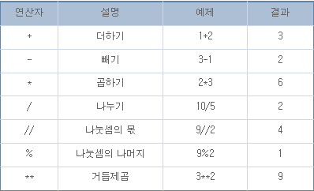
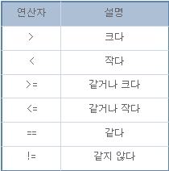
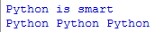
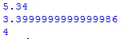

chapter.03 - 수와 문자의 연산 및 주석처리
-연산
(1)산술연산자

(2)비교연산자

2.문자의 연산
문자의 연산이란 무엇일까요?
파이썬에서는 문자열을 더하고 곱할 수 있습니다.
#예제3.1
a="Python"
b="is smart"
print(a+b)
print(a*3)

->문자열의 덧셈은 문자열 뒤에 문자열을 붙입니다.
->문자열의 곱셈은 문자열을 정수만큼 반복합니다.
-주석처리
주석이란 영어로 comment인데 즉, 프로그램 소스 옆에 코멘트를 달아 놓것을 뜻합니다.
여기서 중요한 점은 주석은 프로그램에 전혀 영향을 미치지 않습니다.
#예제3.2-1
num=534
c=num%10
b=num/10%10
a=num/100%10
print (a)
print (b)
print (c)
#예제3.2-2
num=534
c=num%10 #1의 자릿수
b=num/10%10 #10의 자릿수
a=num/100%10 #100의 자릿수
print (a)
print (b)
print (c)

->결과가 같은 위의 두 예제 중 어떤것이 알아보기 쉬울까요?
즉, 주석은 무엇을 뜻하고, 어떤일을 하는 지 알려주는 것이 바로 주석의 역할입니다.
(1)한줄짜리 주석
#예제3.3
print ("hello") # hello 출력
->한줄짜리 주석은 #을 붙이면 #부터 그 줄끝까지 주석이 됩니다.
(2)여러줄의 주석
#예제3.4
'''
print ("hello")
print ("hi")
print ("안녕하세요")
print ("python hello")
'''
print ("python is smart")
->여러줄의 주석은 작은따옴표 3개(''')또는 큰 따옴표 3개(""")로 감싸
문자열로 만들어 주석으로 사용합니다.
(3)주석의 활용
#예제3.5
num=534
c=num%10 #1의 자릿수
b=num/10%10 #10의 자릿수
a=num/100%10 #100의 자릿수
#print (a)
#print (b)
#print (c)
d = c*100 + b*10 + a # 숫자 뒤집기
print (d)
->주석은 프로그램에 영향을 미치지않는 점을 이용하여
임의로 소스를 제거할 때 사용되기도 합니다.